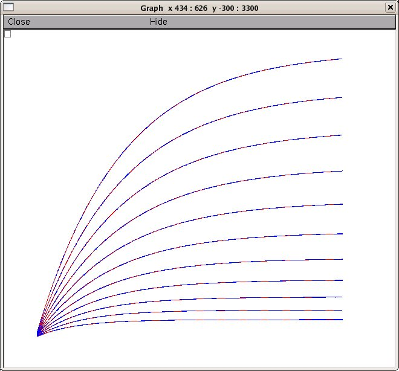
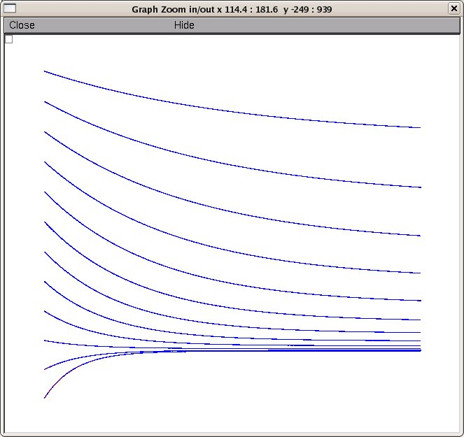

This is the ModelDB version of the readme for the model associated with the paper: Gurkiewicz M, Korngreen A (2007) A Numerical Approach to Ion Channel Modelling Using Whole-Cell Voltage-Clamp Recordings and a Genetic Algorithm PLoS Computational Biology 3(8):e169 Both the model (569 KB ZIP) http://compbiol.plosjournals.org/archive/1553-7358/3/8/supinfo/10.1371_journal.pcbi.0030169.sd001.zip and the paper http://compbiol.plosjournals.org/perlserv/?request=get-document&doi=10.1371/journal.pcbi.0030169 are available at the PLoS web site, and there is this copy of the model also at ModelDB accession number 97759 In order to run the GA you have to install a recent version of NEURON available from http://www.neuron.yale.edu Once installed you can auto-launch from ModelDB and start the training algorithm (button press) or Under linux: ------------ compile the KChannel.mod file using "nrnivmodl" then type nrngui ga.hoc Under Windows: -------------- Run "mknrndll" then double click on the ga.hoc file icon. Under MAC OS X: --------------- On the MAC drag and drop the Ga_demo folder onto the mknrndll icon. Then drag and drop the ga.hoc file onto the nrngui icon. -------------- When complete (after about 2 hours on a PC) you will see matches for activation (the blue target curves are on top of the red search results):  and deactivation  Have fun